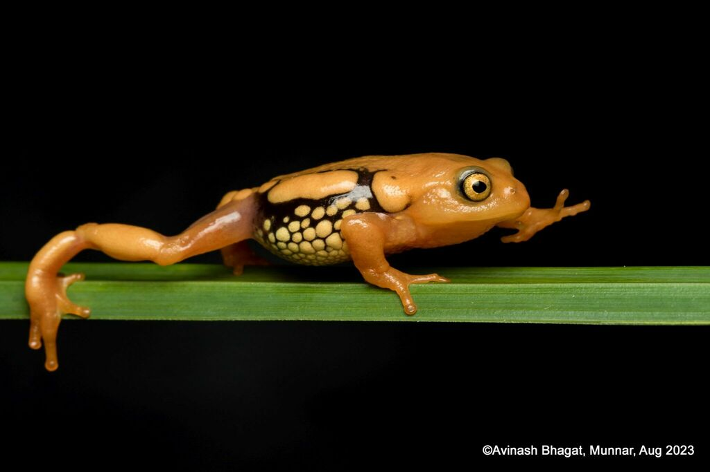

My story
The short version
It started with a library book. In high school I read a biography of Charles Darwin, and the idea that all of life could be explained by evolution lodged in my head and refused to leave.
That curiosity followed me into my Integrated Masters at NISER, where I talked my way into two field internships that rearranged my plans completely. One put me in a lab studying how tumours trick the body into growing blood vessels; the other put me on sun-baked rocks in India’s Western Ghats, watching lizards fight over territory. Different systems entirely, but the same itch: I wanted to know how living things make decisions, and how that decision-making evolves as they react to the world around them.
That question carried me to IISc next, where fieldwork on rock agamas and molecular work untangling frog phylogenetics turned a classroom interest in evolution into hours spent on a hillside, or bent over a specimen, actually watching the logic play out. By the time I applied to PhD programs I knew exactly what I wanted to chase.
That thread runs straight through my PhD at the University of Florida. I spent it on two animals that could not be more different. With the African jewelfish, an invasive species that lives with constant upheaval, I asked how reproductive decisions evolve when conditions never settle. With jumping spiders, I dug into why colour vision has evolved again and again in separate lineages, and what it actually helps them decide, whether that is finding food or finding a mate.
What keeps me going The strange thing about studying animal behaviour is that every answer opens a dozen new questions. The more I learn, the more I realise is still out there, and the gap only seems to widen. What pushes an animal to pick one option over another, what those choices cost it later, and how the act of deciding itself changes as the world changes: that is the work I expect to be chasing for a very long time.
- 2Papers published
- 5Manuscripts in prep
Field guide
Study Organisms
The species at the centre of my research questions.

Hemichromis letourneuxi
Density-dependent parental care, Florida waterways

Stenaelurillus lesserti
Colour vision and foraging, Bengaluru

Agama agama
Territory and competition on the rocks, Western Ghats

Microhylidae sp.
Molecular phylogenetics and cryptic diversity, Western Ghats